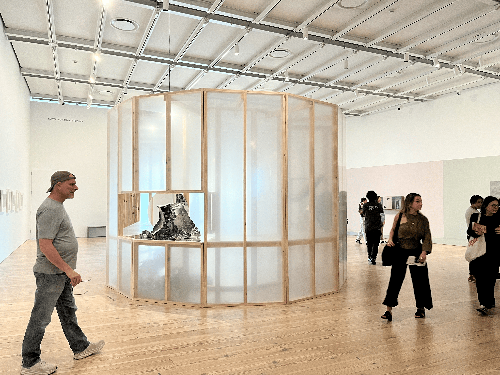
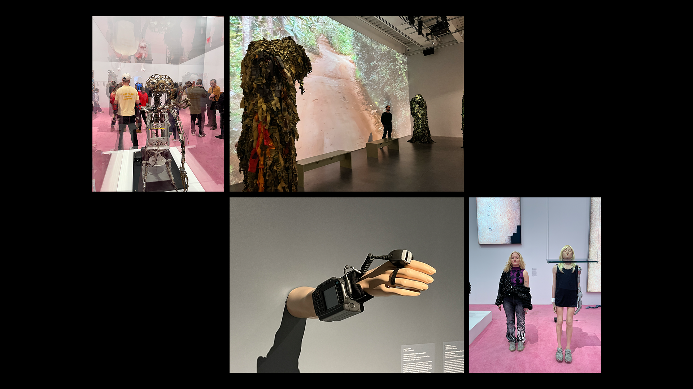
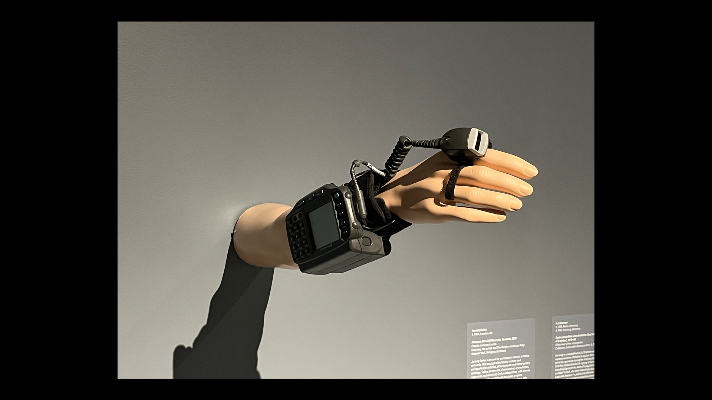

Jan 21, 2026 | Wednesday
What is my definition of collapse? Collapse is the disintegration of a system
or physical form from within.

Types of systems capable of experiencing collapse:
Mental
Emotional
physical
Environmental
Academic
Government
Political
Social
Cultural
Financial
Professional
Jan 26, 2026 | Monday
What is my definition of collapse? Collapse is the disintegration of a system
or physical form from within.
On a snow day, society became still and silent; people stayed inside.
The collapse of comfort shifted into a state of worry. On the other hand,
I went outside for a walk before making my way to the store for groceries
and essentials. I find the snow pleasant—relaxing yet energetic. It’s
interesting to witness how people react and panic over something that has
occurred in the past. I begin to question whether it’s a generational thing,
our reactions influenced by major events, the temporary collapse of human comfort,
whether local or international.
Feb 17, 2026 | Tuesday
Research Tracker created to track research and sources for final project. Use the link below to access
tracker.
Research
Tracker Here
Apr 05, 2026 | Sunday
WHITNEY BIENNIAL critical blog response

Continuous Fractures Generating New Yields
Walking into the sixth floor of the Whitney Museum of American Art, I was immediately drawn to a large
structural installation by CFGNY.
The installation, "Continuous Fractures Generating New Yields," is composed of wooden boards and translucent
plastic sheets
that form a house-like structure. Within the negative spaces of the walls are porcelain objects and
dollar-store items—objects
I later learned were specifically made in China—as well as a stuffed animal that appears to weave its way
through the structure.
The first thing I noticed was the translucent plastic sheets that covered and surrounded the house-like
structure.
They created a sense of separation between me and the world within the structure.
The second thing I noticed was the stuffed animal that appeared to weave through the openings.
It suggested that entry was possible, as if moving through the structure meant stepping into a different world
or room.
The third thing I noticed was the series of openings that functioned as display spaces for the porcelain
objects and dollar-store items.
I found myself more drawn to the negative space than to the objects themselves. The emptiness created a sense
of mystery,
as if there were more hidden within the structure than what was immediately visible.
Apr 11, 2026 | Saturday
NEW MUSEUM critical blog response

New Humans: Memories of the Future (installation work)
The title Memories of the Future suits the work well, as it reflects on the idea of the future that we imagine
and anticipate.
While waking throught he installations, I was reminded of the the Netflix series "Black Mirror,"
which explores the dark and dystopian aspects of technology and its impact on society.
The installations evoked a similar sense of unease and the "What If?" concept about the future, as they
presented a vision of a world that is both familiar and unsettling.
In one installation, a maniquin arm extending from the wall displayed a wearable device that resembled a ankle
monitor, usually associated with house arrest.
The device, on display. Motorola WT4000, was designed to track work speed in warehouses. Used by Amazon,
the device was used to track the speed of orders and efficiency of its staff. The device can calculate if the
user, the workder,
is working too slow and send warnings to the worker.

The design of the device appears heavy and uncomfortable, consisting of two parts: one that wraps around the
wrist
and another that fits on the pointer finger, both connected by a curled cord. The colors of the device are
black and grey,
which give it a industrial look. I can’t imagine how this device would improve worker efficiency,
as it seems more like a tool for surveillance and control than one for productivity.
In another room, there was a large screen displaying a video of movement through a town.
Colored outlines surrounded only the people and vehicles, resembling a tracking system.
The video itself appeared AI-generated, as the movements of both people and vehicles felt unnatural.
It presented a vision of a world where surveillance and tracking are inescapable,
and where the line between reality and simulation is blurred, an idea also reflected in the Motorola WT4000.